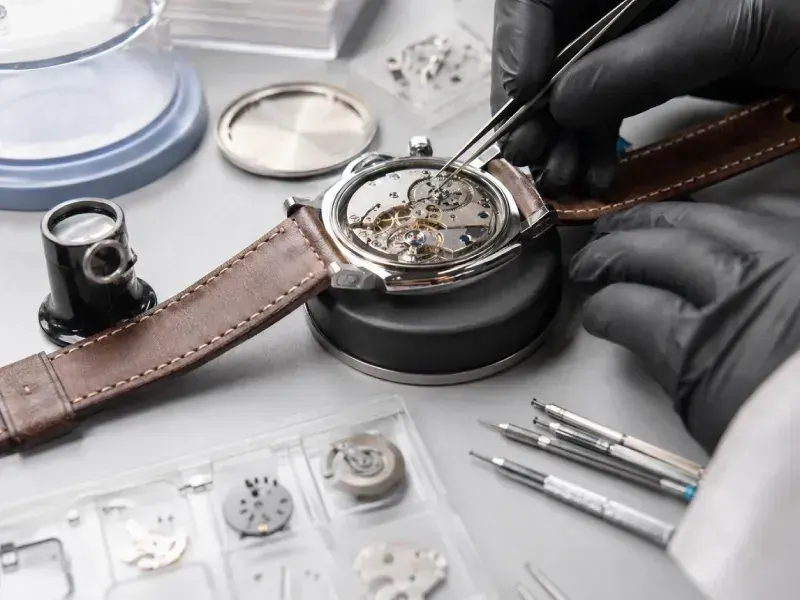

Zegarek to nie tylko praktyczny dodatek, ale też element stylu. Odpowiednia pielęgnacja pozwala zachować jego wygląd i sprawne działanie przez długie lata. Oto 7 prostych zasad, o których warto pamiętać.

- Chroń przed wodą - sprawdzaj wodoszczelność zegarka i pamiętaj, że uszczelki z czasem się zużywają. Unikaj gorącej wody i sauny.
- Regularnie czyść - przecieraj kopertę i bransoletę miękką ściereczką. Unikaj silnych detergentów i środków chemicznych.
- Dbaj o pasek - skórzany chroń przed wilgocią, a gumowy i stalową bransoletę regularnie czyść z potu i zabrudzeń.
- Wymieniaj baterię na czas - nie odkładaj wymiany, gdy zegarek się zatrzyma. Zużyta bateria pozostawiona na dłużej może uszkodzić mechanizm.
- Unikaj uderzeń i silnych pól magnetycznych - mogą zakłócić pracę mechanizmu albo go uszkodzić.
- Pamiętaj o przeglądach - okresowa kontrola mechanizmu i uszczelek pomaga wykryć usterki, zanim staną się poważnym problemem.
- Przechowuj prawidłowo - gdy nie nosisz zegarka, trzymaj go w suchym miejscu, najlepiej w pudełku lub etui.
W salonie wymienimy baterię, pasek i szkiełko oraz pomożemy w podstawowej pielęgnacji zegarka.
Zapraszamy do salonu przy ul. Piłsudskiego 2
Zadzwoń: 724 648 772